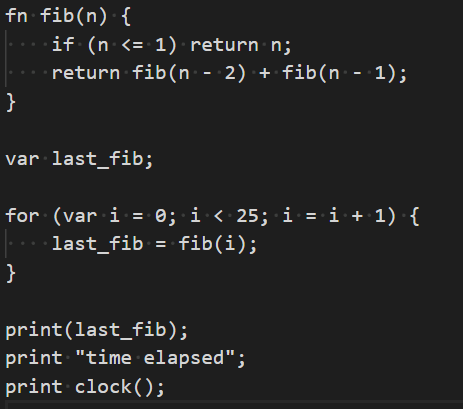
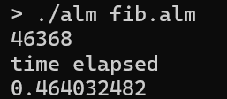

Home - Back to the main page
Gallery - View my photography collection
INFO: My work related projects are showcased on my resume! Github is linked for each project.
Developed a software-based ray tracer in C++ using OpenGL. This project implements recursive reflection, refraction, and shadow algorithms while employing efficient scene management for improved performance.
Implemented a dynamic solar system simulation in C++ using OpenGL and ImGui. The project includes custom GLSL shaders for realistic Phong shading, modeling planetary surfaces and lighting effects. Interactive controls allow for real-time manipulation of orbital parameters.
**Work in progress.** Developing a racing game engine in C++ using OpenGL for rendering and PhysX for physics simulation. My tasks include designing an AI module for pathfinding and motion planning, a custom camera system, input handling, and integrating an Entity-Component-System (ECS) framework for modular game architecture.
Implemented a custom, Lox-inspired programming language in Golang. The language supports dynamic typing, functions, and system variables (timers). A custom interpreter and interactive REPL were developed to execute and test code snippets.
Language Code:
Output:
Developed a Chip-8 emulator in C++ using SDL, accurately replicating the behavior of the original Chip-8 system. The emulator handles CPU instructions, input/output operations, and timing, allowing for a faithful reproduction of classic Chip-8 games.
Engineered a recommendation system using ALS-based collaborative filtering in SparkML on Google Colab. This allowed for distributed training of the machine learning model. The workflow involved extensive data preprocessing, model training, and integration with the Spotify API to generate personalized song suggestions for new playlists.
Implemented a convolutional neural network (CNN) in TensorFlow for the classification of vegetables from real-world images. The project involved dataset curation, model optimization through data augmentation and hyperparameter tuning, and performance evaluation.
Developed foundational neural network models in MATLAB to explore machine learning principles. The project covers implementations of the perceptron, Hebbian learning, pseudo-inverse methods, least mean squares, and a basic deep learning backpropagation network, with a focus on understanding weight optimization and matrix operations.
Built a full-stack web application using Django that functions as a music forum. The platform supports user registration, profile management, content posting, and interactive community discussions, underpinned by a robust backend and responsive front-end design.
Developed a comprehensive banking management system using Django and Python. The application supports multiple user roles (admins, employees, and customers) and is built on a robust database design to handle OLTP operations efficiently.
Created a Java desktop application for managing movie theater reservations. The system handles ticket booking, screening schedules, and user account management with email authentication, emphasizing secure transactions and efficient data handling.
Developed an interactive Etch-A-Sketch application using Python's Turtle graphics library. Integrated with a microcontroller to process analog input from a potentiometer for drawing control, including features for dynamic orientation adjustments. Detailed documentation and a demonstration are provided.
Engineered a stop watch application in C that leverages microcontroller frequency for precise time measurement. The project involves low-level hardware interfacing, real-time processing, and thorough Detailed documentation with a live demo.
Developed a cloud-based file conversion service hosted on AWS. This system uses AWS Lambda to trigger serverless functions and S3 buckets to handle file storage, automating the conversion of file formats (e.g., DXF to OBJ) with scalability in mind.
Implemented a secure remote shell tool in Python to allow command execution on a remote server. The system supports file transfers between client and server, employing secure communication protocols and robust error handling.